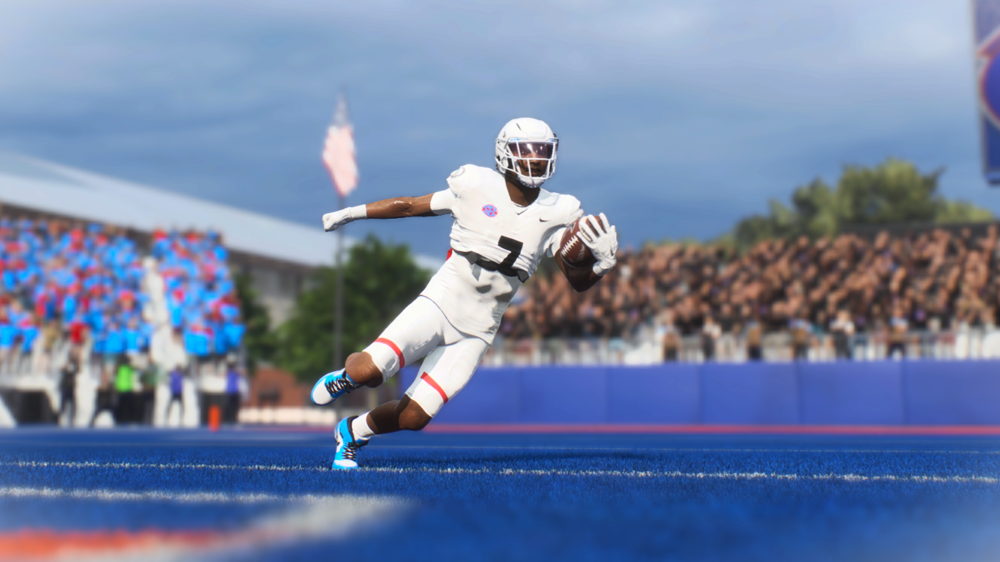

Jordan Vaughn
#7 | Halfback | Freshman
Cicero, New York | 5'11", 186 lbs
Player Information
| Detail | Info |
|---|---|
| Full Name | Jordan Vaughn |
| Number | #7 |
| Position | Halfback (HB) |
| Class | True Freshman |
| Height / Weight | 5'11" / 186 lbs |
| Hometown | Cicero, New York |
| Status | Returns as a True Sophmore |
Awards and Honors
| Awards |
|---|
| Heisman Trophy Runner-Up |
| Doak Walker Award (Best RB) |
| Shaun Alexander Award (Best Freshman) |
| National First Team All-American |
| SEC First Team All-Conference |
| National Freshman All-American |
| SEC Freshman Team |
Season 1 Rushing Stats
| Stat | Value |
|---|---|
| Games Played | 13 |
| Carries | 161 |
| Rushing Yards | 1,382 |
| Yards Per Carry | 8.6 |
| Rushing Touchdowns | 23 |
| Longest Rush | 86 yds |
| Broken Tackles | 13 |
| Yards After Contact | 210 |
| Fumbles | 0 |
Season 1 Receiving Stats
| Stat | Value |
|---|---|
| Receptions | 37 |
| Receiving Yards | 511 |
| Yards Per Reception | 13.8 |
| Receiving Touchdowns | 3 |
| Longest Reception | 83 yds |
| Yards After Catch (RAC) | 542 |
| RAC Average | 14.6 (Best on team) |
| Drops | 1 |
Season 1 Combined Totals
| Stat | Value |
|---|---|
| Total Touchdowns | 26 (23 rushing + 3 receiving) |
| Total Yards From Scrimmage | 1,893 (1,382 rush + 511 rec) |
| 80+ Yard Runs | 4 |
Top 3 Performances
| Game | Carries | Rush Yds | Rush TD | Highlight |
|---|---|---|---|---|
| Week 14 @ California (W 44-27) | 20 | 236 | 3 | Set single-game rushing yards record. 83-yard opening play TD. 11.8 YPC. Closed the regular season in dominant fashion. |
| Week 13 @ Georgia State (W 65-3) | 16 | 189 | 5 | Set single-game Rocket City rushing TD record. SEC + National Offensive POTW. |
| Week 12 @ #18 Alabama (L 38-45) | 13 | 131 | 1 | 86-yard run (longest of the season). Kept RCU in the game against the rival. |
Highlight

Player Storyline | The Home Run
Jordan Vaughn wasn't supposed to be the guy. Not yet anyway. He was a five-star freshman with elite speed, but at 5'11" and 186 pounds, he was too small to be a featured SEC running back. Brandon Ford, the 224lb starter from the year before, a bruiser who broke tackles and punished defenders, was set to be the lead back. Vaughn was more of a complementary piece. The plan was to develop him slowly, 8-10 runs a game, and let him grow into the role the next year, possibly using his athleticism at another position.
Then Ford broke his back. A broken vertebra against South Alabama in Week 6. He was never going to play college football again.
What Vaughn did with that opportunity was historic. He single-handedly reinvented what the Rocket City running game looked like. He made defenders miss, he cut without losing speed, changing direction at full velocity. When he hit the open field, nobody in the conference could catch him. He had four runs of 80-plus yards in a single season, no other running back in the country had more than two. When Vaughn found daylight, the play was over.
He won the Doak Walker Award as the best running back in the country, he won the Shaun Alexander Award as the best freshman, and he finished second for the Heisman Trophy, being the only non-quarterback in the top 5.
The “too small” freshman is now the face of the program going into his sophomore season.